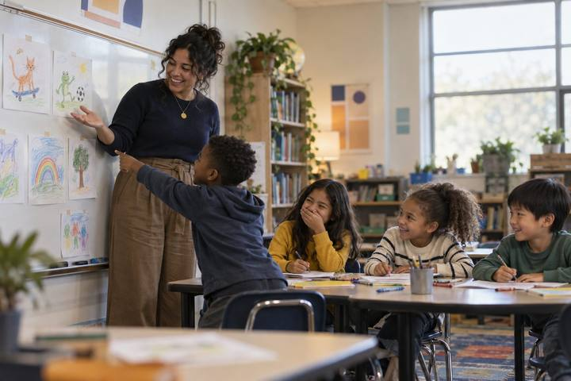
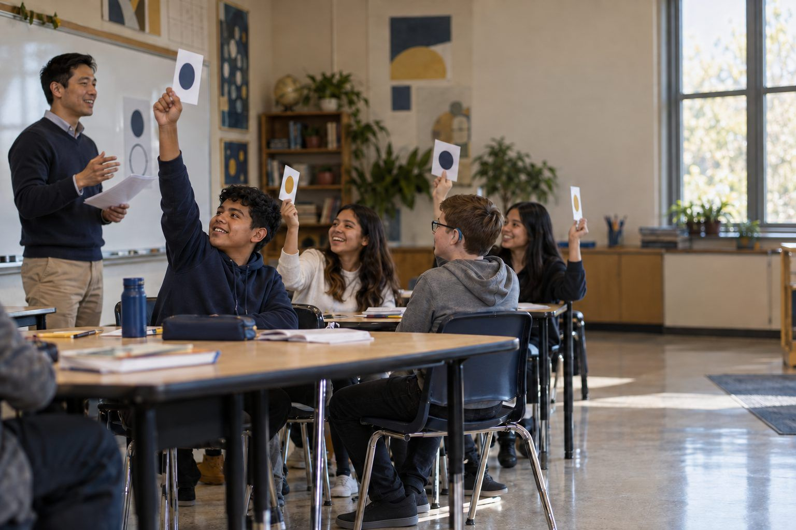

Student learningfor Grades 3–5
Credit Where It's Due
After their own doodles get "borrowed" without credit, students learn to credit creators, ask permission, and write an honest note whenever AI helped with their work.

All activities Student learning
Students sort real-world remix decisions using copyright, Creative Commons, and fair use, then write credit lines that include honest notes about AI help.
"It was on the internet, so it's free" is one of the most common student beliefs, and it's wrong. Almost everything people create is protected by copyright automatically, but creators can choose to share through Creative Commons licenses, and fair use allows some limited uses for things like commentary, criticism, and teaching. In this activity, students sort fourteen remix decisions, learn what the Creative Commons license symbols mean, and write credit lines for a project, including an honest note when AI helped. The goal is not fear of using anything; it's knowing how to remix responsibly.
Hook
Read three statements and have students stand for true, sit for false: "If it's online, I can use it." (False.) "If I give credit, I can use anything." (False: credit isn't permission.) "Some creators want you to remix their work." (True.) Say: "Today you'll learn to tell those situations apart, including what to do when AI helped make something."
Facilitator noteThe credit-equals-permission myth is the one to watch. Name it explicitly.
Model
Teach briefly: Copyright protects original work automatically as soon as it's created, so "no copyright symbol" doesn't mean free. Creative Commons licenses let creators say ahead of time how you may reuse their work (show one license card). Public domain works have no copyright restrictions, such as very old works whose copyright expired or works whose creators dedicated them to the public. Fair use allows limited use without permission for purposes like commentary, criticism, news, and teaching. It weighs four things: why you're using it, what kind of work it is, how much you use, and whether your use hurts the market for the original. Then add: "If AI helped make your work, be honest about what it did. Rules about AI and copyright are still being worked out, so transparency protects you."
Facilitator noteStress that fair use is decided case by case. It's a reason you might be allowed, not a guarantee.
Explore
Teams spread out Handout B's license cards, front side up. Read short situations aloud and teams race to hold up the license that fits: "I want people to remix my art, but not sell it" (BY-NC). "I want people to share my song exactly as it is" (BY-ND). "I don't care what people do, not even credit" (CC0). "Remix it, but share your version the same way" (BY-SA). Teams flip cards to check.
Facilitator noteEvery Creative Commons license except CC0 requires credit (BY = attribution). Students often miss that.
Practice
Teams sort the 14 strips from Handout A into Go ahead, with credit, Get permission or choose something else, and Might be fair use: explain. For every fair-use placement, they must name which of the four factors supports it. Then two teams compare and defend their three most different placements before you reveal the key.
Facilitator noteStrip 11 (the AI-made background) sparks good discussion. The issue is less copyright than honesty: saying "I made this all myself" when AI did part of it.
Create
Model one credit line using TASL: Title, Author, Source, License. Example: "Sunrise over Clear Lake by R. Delgado, from the Riverbend Photo Commons, licensed CC BY 4.0." Then model an AI note: "Background image generated with an AI image tool my teacher approved, from my prompt 'watercolor desert at sunset'; I chose the colors, added all text, and arranged the layout." Students complete Handout C for a project they're working on now or one of the practice items.
Facilitator noteIf you run the teacher-driven AI demo, create one image live and have the class write its AI note together.
Reflect
Students finish the last section of Handout C: "Before I use someone else's work, I will… When AI helps me, I will…" Share two or three aloud.
Facilitator noteLook for rules that include checking the license, crediting, and disclosing AI, not just "I won't copy."
Everything runs on paper: the license cards, the sort, and the credit line builder. For practice crediting, give students a printed page of fictional openly licensed images with title, creator, source, and license listed underneath each.
Students use an openly licensed media collection or a search tool's license filter (as recommended by your librarian) to find one image or sound for a current project, then write its TASL credit line on Handout C or in their project file. The teacher alone runs any AI image demo for students under 13; students 13 and older may use a district-approved tool and practice the AI note on their own creations.
Does it need a screen? Searching a real openly licensed collection shows students how easy it is to find media they're allowed to use, which makes responsible remixing the easy choice. The decisions and credit lines themselves work just as well on paper.
What you should be able to see or collect if it worked.
Students decide which remixes need credit, permission, or a fair-use argument and write TASL credit lines, the intellectual property core of digital citizenship.
In the next multimedia project, every image, sound, or clip needs a TASL credit line, and any AI help needs a note. Students can check with family about photos of them posted online: did anyone ask permission?